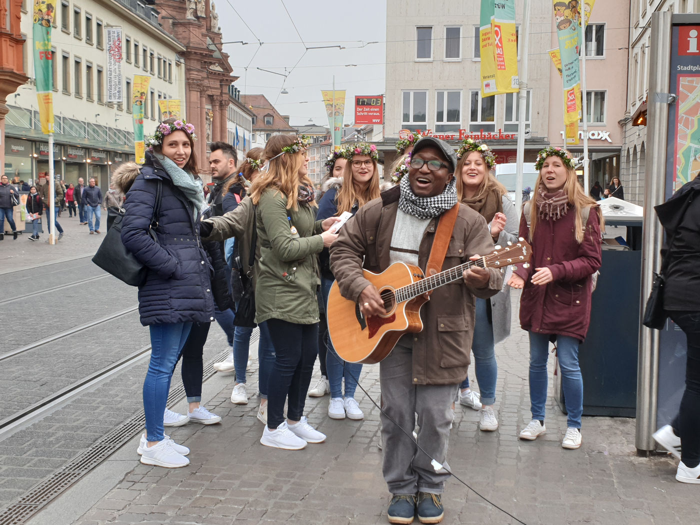
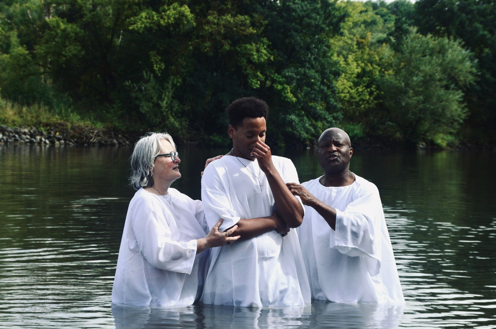
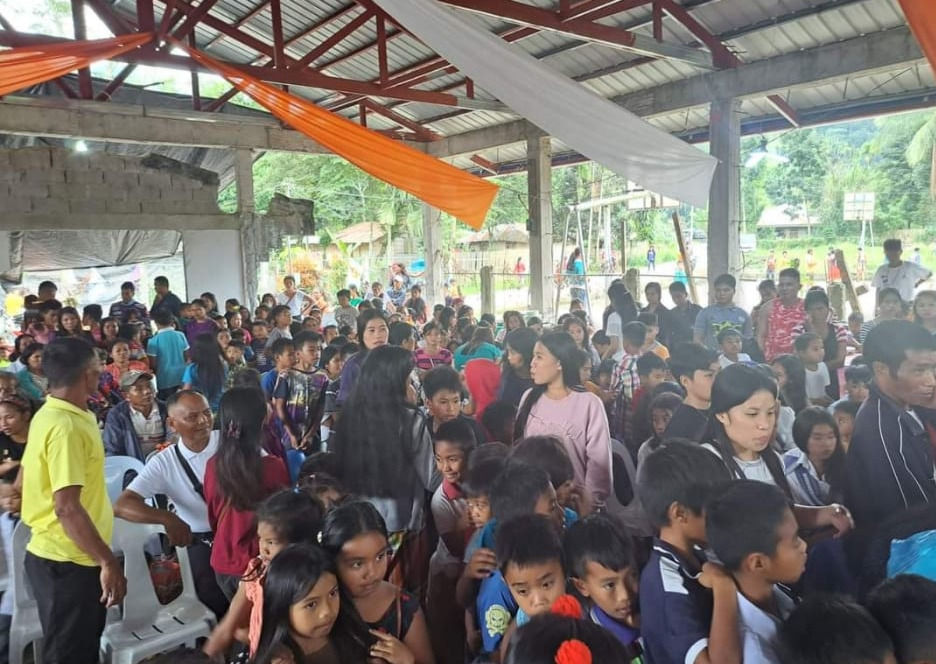

Willkommen im Freedom Worship Center
Where Freedom Reigns.
Eine internationale christliche Kirche in Würzburg, in der Menschen aus vielen Ländern und Kulturen ein Zuhause haben. Erlebe mit uns die Anbetung, das Wort und die Gegenwart und Kraft des Heiligen Geistes.
Termine
Was dich erwartet
Komm vorbei.
Wer wir sind
Eine echte Familie Gottes.
Das Freedom Worship Center bietet eine Gemeinschaft, in der Menschen im Herrn wachsen, ihre Bestimmung entdecken und sich an Gottes Mission beteiligen können. Komm gerne vorbei und werde Teil von etwas Besonderem.
- Gottesdienste auf Englisch und Deutsch
- Kinderkirche jeden Sonntag
- Kaffeezeit und Gemeinschaft nach dem Gottesdienst

Predigten
Alle Predigten
Neueste Botschaften.


Gemeindeleben
Mehr auf Instagram
Einblicke.






Bleib verbunden
Folge uns.
Dürfen wir für dich beten?
Wir glauben an die Kraft des Gebets. Was dich auch bewegt – melde dich bei uns, wir beten vertraulich mit dir und für dich.